Retratos y postales del sombrío y oscuro mundo de Dark Souls III
Cementerio de Ceniza
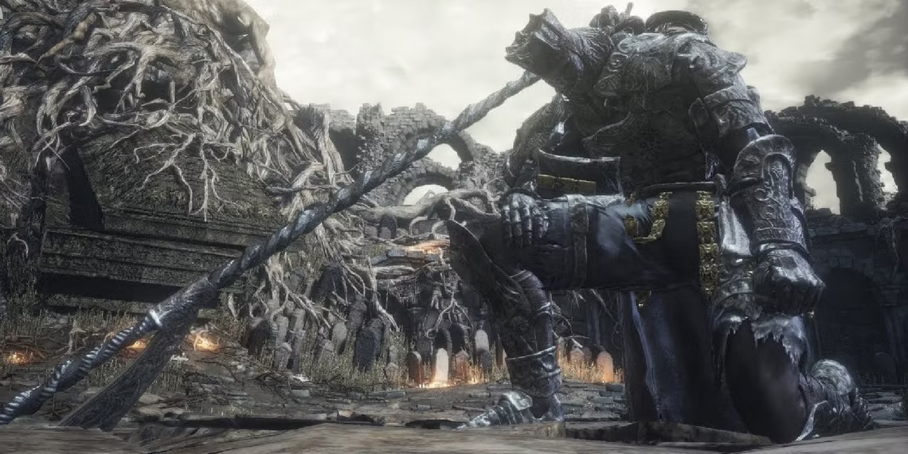
Iudex Gundyr
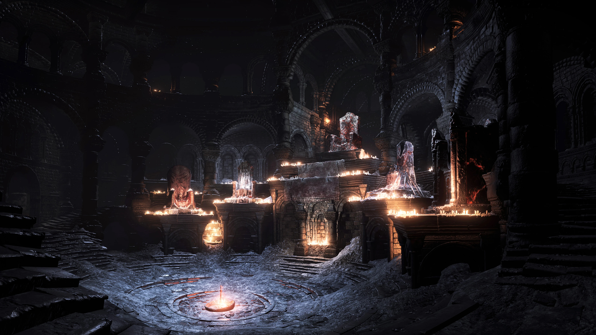
Santuario del Enlace
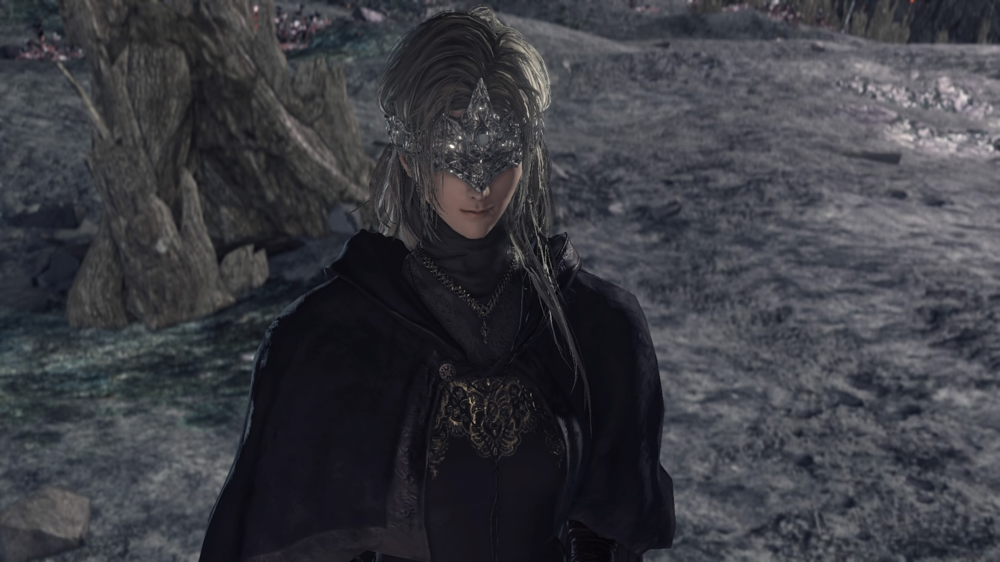
La Guardiana de FuegoLudleth de Courland, el ExiliadoAndre de Astora, herrero del Santuario del EnlaceGran Muro de Lothric
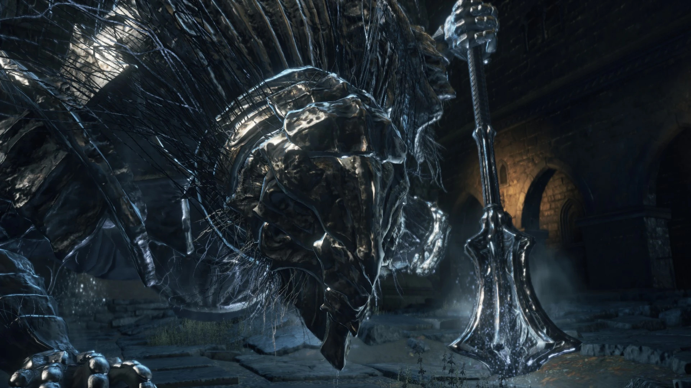
Vordt del Valle BorealAsentamiento de los No Muertos
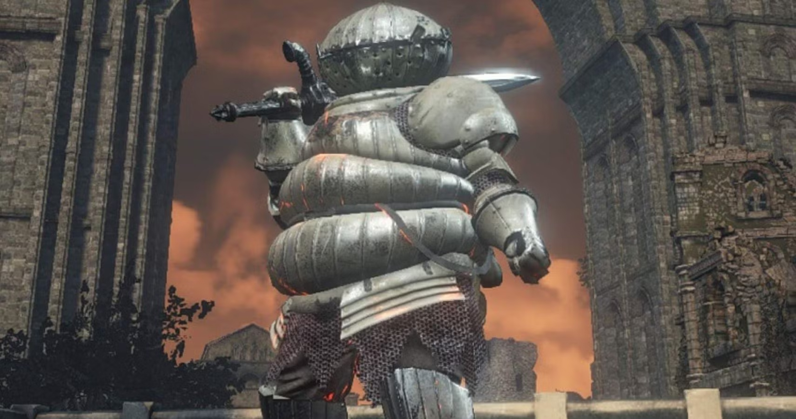
Siegward de CatarinaGran Árbol Corrompido
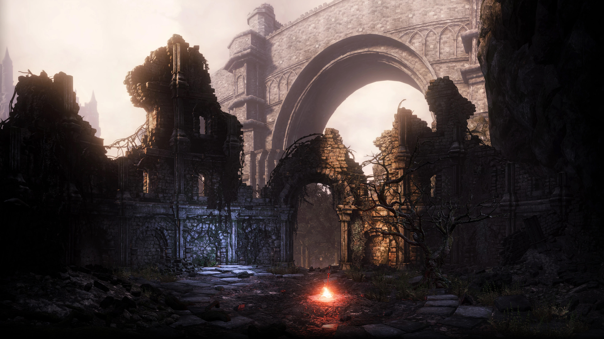
Camino de los Sacrificios
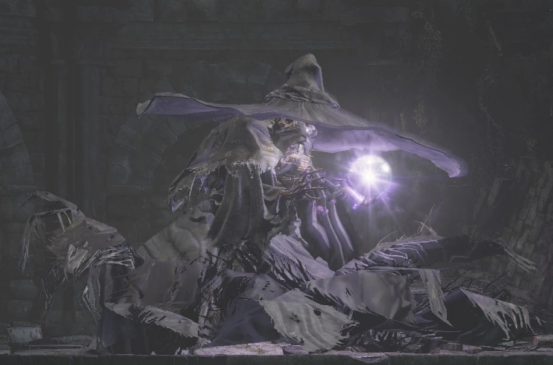
Sabio de CristalCatedral de la OscuridadDiáconos de la OscuridadTorreón de FarronVigilantes del Abismo
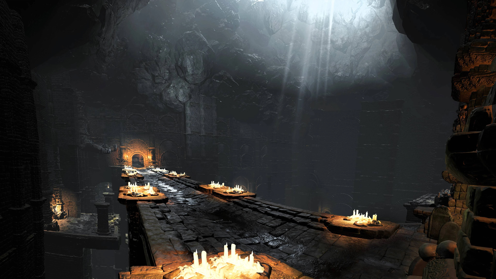
Catacumbas de CarthusGran Señor WolnirLago ArdienteViejo Rey Demonio
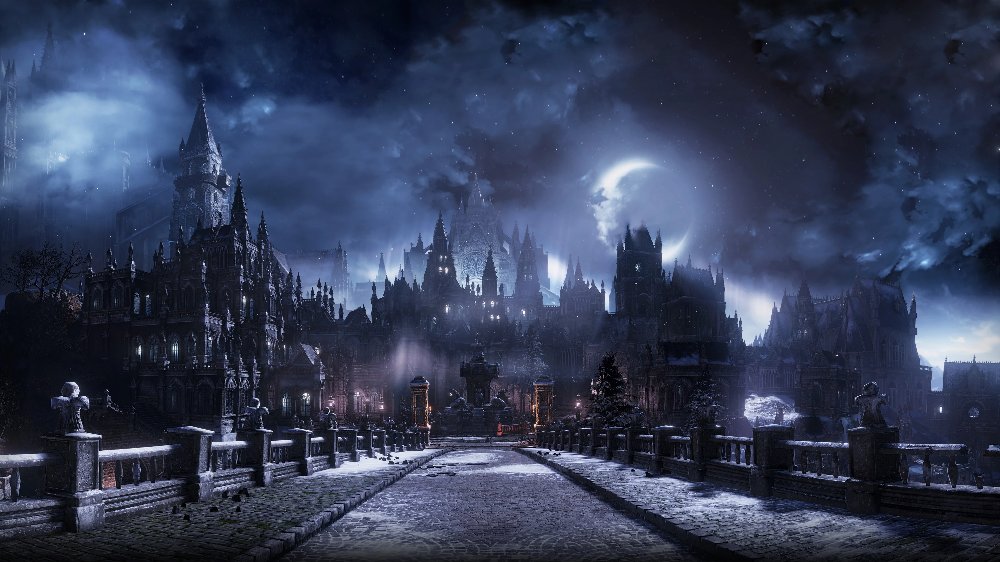
Irithyll del Valle Boreal
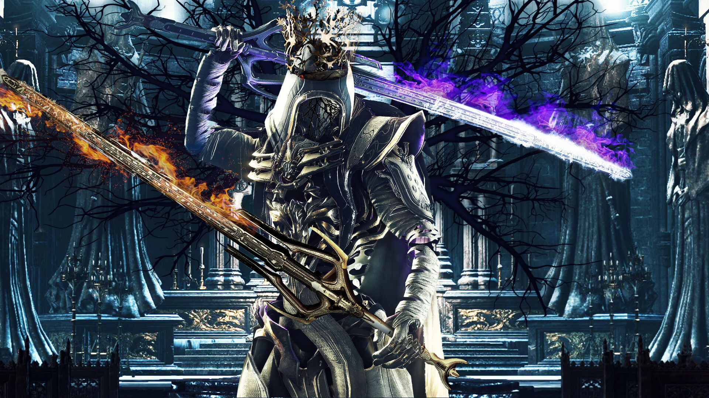
Pontífice SulyvahnAnor LondoAldrich el Devoradioses, al consumir a GwyndolinBailarina del Valle Boreal
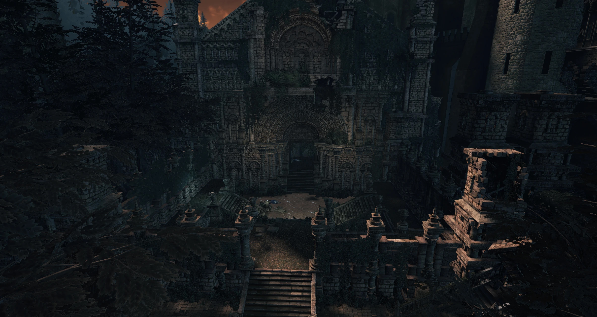
Jardín del Rey ConsumidoOceiros, el Rey Consumido
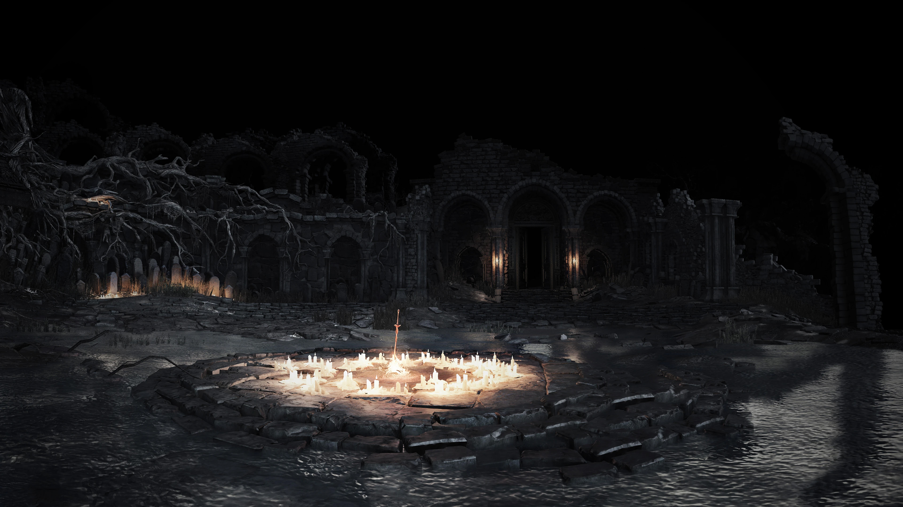
Tumbas OlvidadasCampeón GundyrCastillo de Lothric
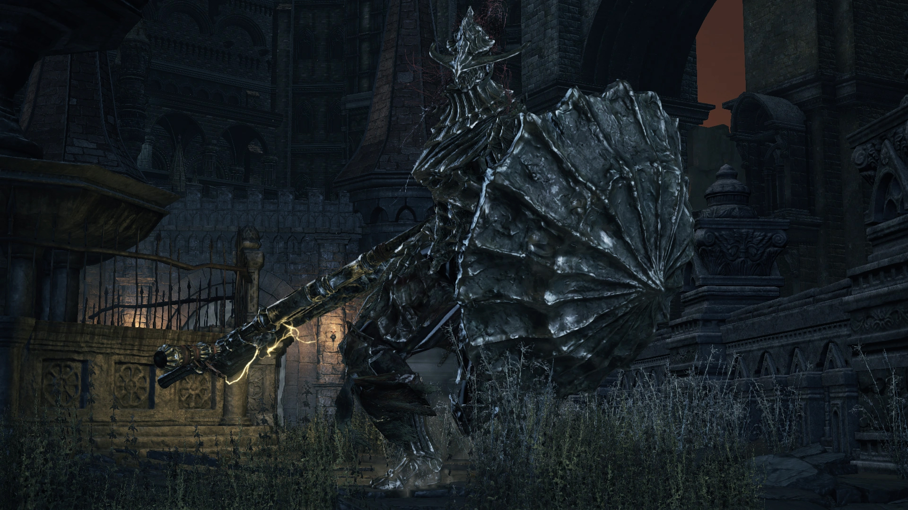
Armadura del Asesino de DragonesEl Gran ArchivoLorian, el Príncipe Anciano y Lothric, el Joven Príncipe
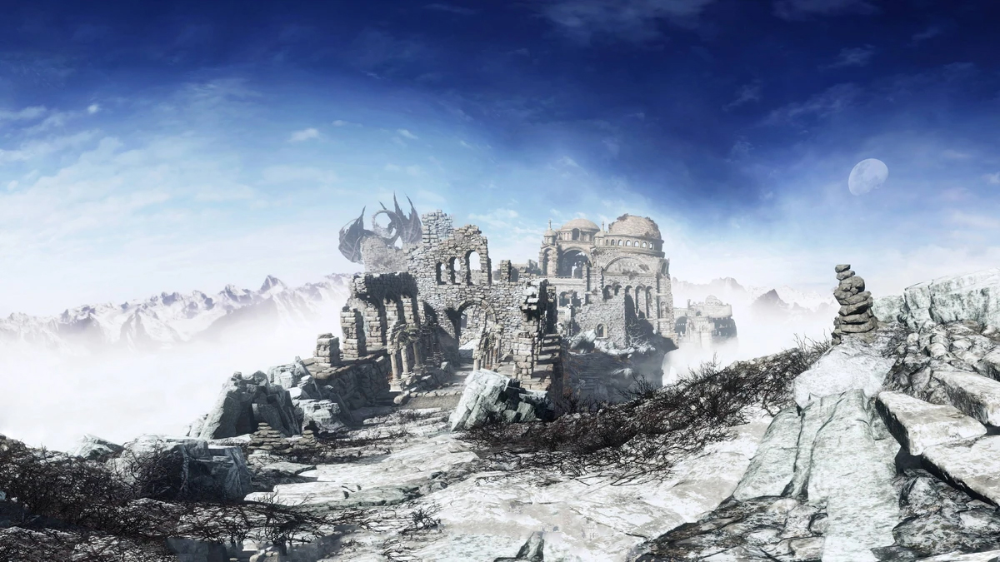
Pico del ArchidragónWyvern Antiguo
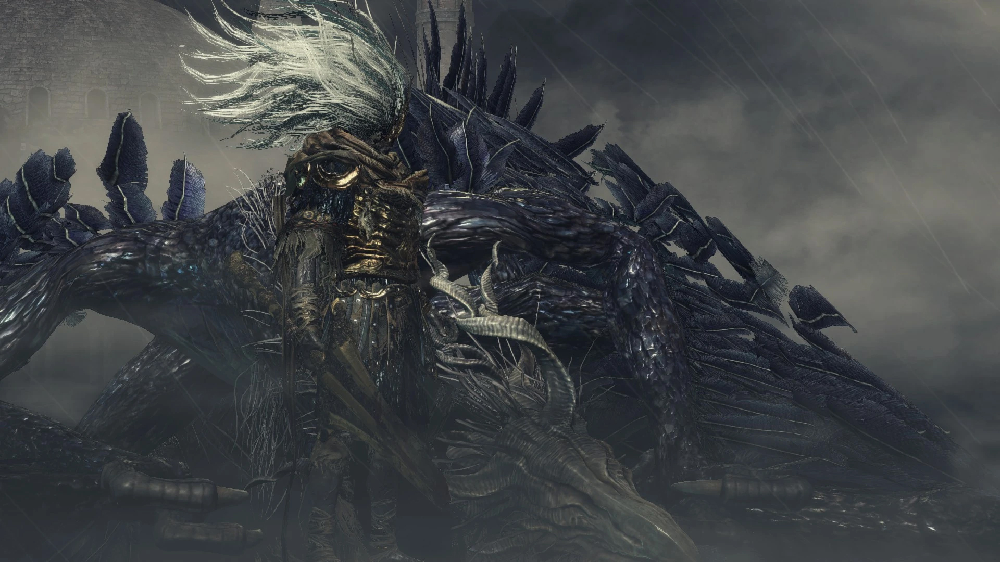
Rey Sin Nombre junto a su fiel Rey de la Tormenta
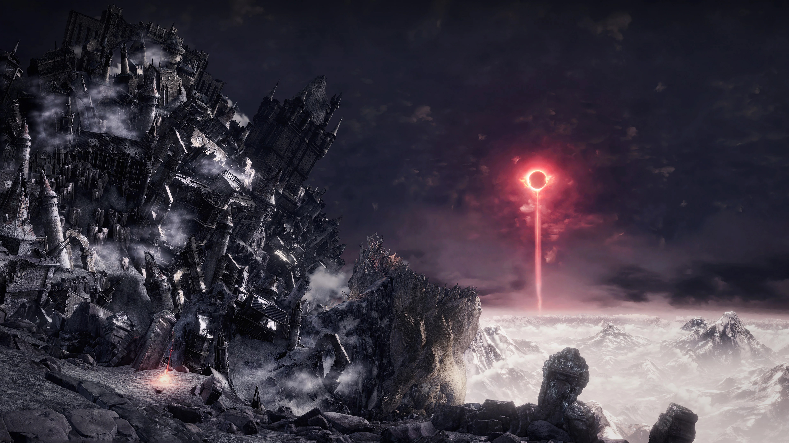
Horno de la Primera Llama
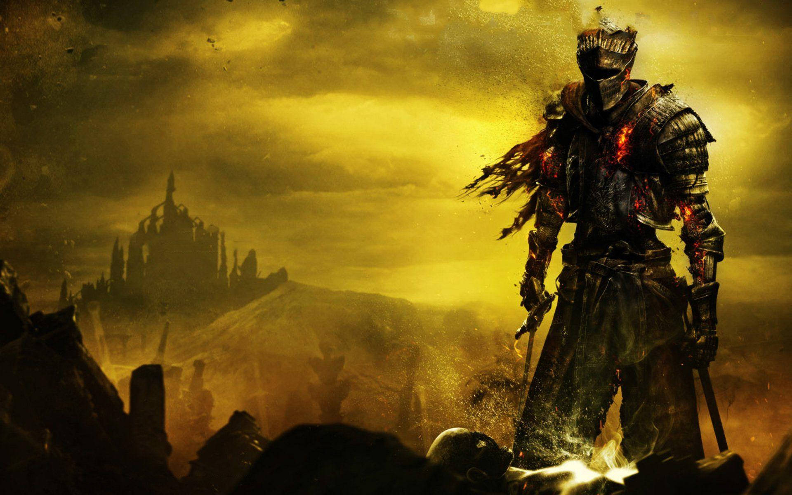
Alma de CenizaEl Enlace de la Llama, el final de la aventura


 ↑
↑